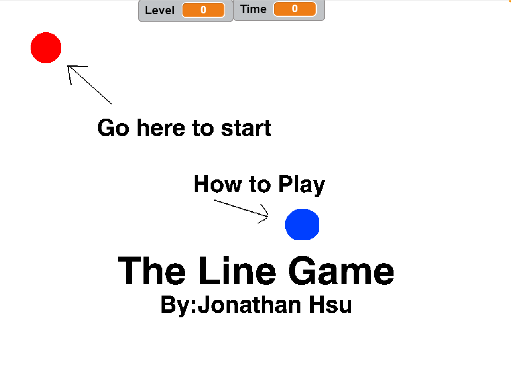

Name Assignment
Description
Used scratch to design and create a program that shows my name. The requirements were to add a sprite for each letter in my name and give them 3 unique behaviors. The program needed to run when the green flag was clicked and for extra credit I added a function to reset the scene to the beginning each time the green flag was clicked.
Concepts Learned:
- Using event blocks - green flag clicked , when key pressed
- Used loops - I used a forever block to move my main sprite back and forth
- Sprites -I used the library of sprites to find letters in my name and I also created my own sprite using the sprite editor.
- Movement - I used the turn motion to turn some of my sprites and the size movement to change the size of the sprite
Computer Buying Project
Description
Used scratch to create a slideshow that would give people information about computers and then tell them advice on which computer they should choose. The requirements were to give people detailed facts about 4 different computer options and select which one would fit their circumstance the most.
Concepts Learned:
- Backdrops - used backdrops as the information on the slides
- Using event blocks - green flag clicked , when key pressed
- Used loops and if statements to move between the slides
Final Project

Description
For the final project, we were either able to create a game or a story. I chose a game for my project. The requirements for the game were that it had to have levels, a timer, a score, and a way for the user to win the game. In the end, I created the line game where users navigated through the course using their mouse.
Concepts Learned:
- Backdrops - used as the different levels in the game
- Variables - used as the timer and the level display
- Loops and if statements - used to ask whether or not the user was touching a certain color
- Sensors - used to tell whether the user was touching a color